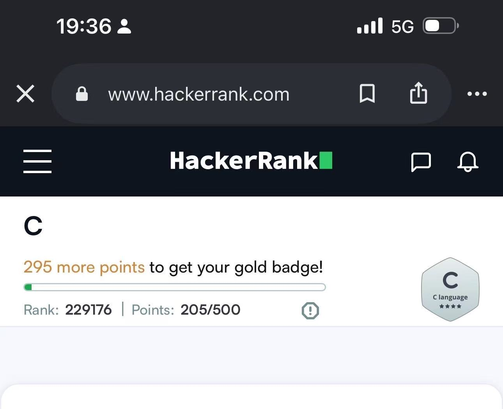
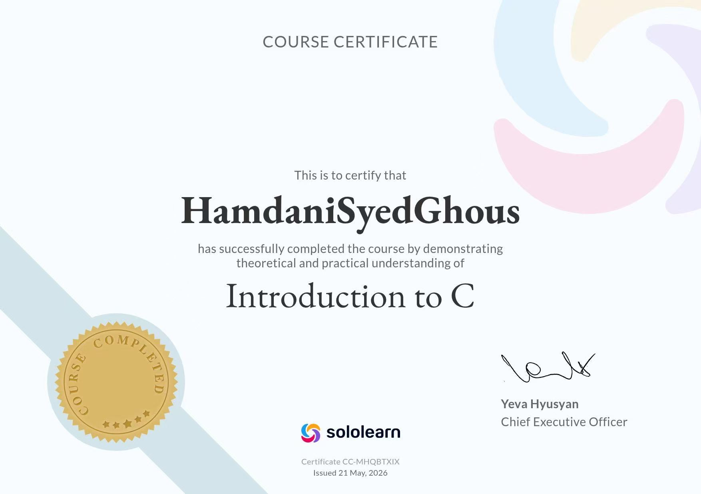

HackerRank was one of the most important tools in my C programming journey. When I first started using it, I was nervous because the problems looked difficult and the platform felt unfamiliar. However, I quickly realized that HackerRank is designed to help learners grow step by step. The first problems I solved were very simple, dealing with input and output, basic arithmetic, and conditional statements. As I gained confidence, I moved on to more challenging topics such as loops, arrays, strings, and functions. Each problem I solved taught me something new, and each failure pushed me to think more carefully about my approach.
One of the things I appreciated most about HackerRank is the instant feedback. If my code was wrong, I could see exactly which test cases failed and why. This helped me develop strong debugging skills. Over time, I learned to read error messages carefully, trace through my logic step by step, and identify where things were going wrong. I also learned the importance of writing clean, readable code, because HackerRank problems often required solving complex tasks with limited lines of code.
The topics I practiced most on HackerRank included conditionals, loops, arrays, string manipulation, and functions. I also worked on problems involving pointers and memory, which were the hardest for me at first. With practice, however, I began to understand how pointers work and why they are so powerful in C. I earned several badges and completed many challenges, and I am proud of the progress I made. HackerRank not only improved my coding skills but also taught me how to think like a programmer. It showed me that programming is not just about writing code, but about solving problems methodically and persistently.
Perhaps the most valuable lesson I learned from HackerRank is the importance of consistency. Solving one problem a day, even a small one, adds up over time. I also learned to not be afraid of failure. Every wrong submission was a chance to learn something new. Looking back, I can see how much I have grown since I first opened the platform. I plan to continue using HackerRank in the future to keep improving my skills.

SoloLearn was another platform that played a major role in my C programming education. Unlike HackerRank, which focuses on solving problems, SoloLearn provides structured courses with lessons, quizzes, and hands-on coding exercises. I started with the beginner C course, which covered the basics of the language, including variables, data types, operators, and control flow. The lessons were short and easy to follow, and the quizzes helped me check my understanding after each topic.
As I progressed through the course, the topics became more advanced. I learned about functions, arrays, strings, pointers, and file handling. Each lesson built on the previous one, so I always felt like I was making steady progress. One thing I really liked about SoloLearn is the interactive code playground, where I could write and run code directly in the browser. This made it easy to experiment and see the results of my changes immediately.
The community aspect of SoloLearn was also very helpful. I could see how other learners approached the same problems, and sometimes their solutions were more elegant than mine. This gave me new ideas and helped me think about coding from different perspectives. The challenges and quizzes were fun and competitive, and earning points and certificates motivated me to keep going.
By the end of the SoloLearn C course, I felt much more confident in my programming abilities. I had earned a certificate that I am proud to display, and I had built a strong foundation that I could apply to other languages and projects. SoloLearn taught me that learning to program is a journey, not a race. It also showed me the value of structured learning and consistent practice. I recommend SoloLearn to anyone who wants to start learning programming from scratch, because it makes the process approachable and enjoyable.

Looking back on my C programming journey, I am amazed at how much I have learned. When I started, I knew almost nothing about programming. I struggled with basic concepts like loops and conditionals, and I often felt overwhelmed. But with consistent practice on HackerRank and SoloLearn, I gradually built up my skills and my confidence. I learned that programming is not about being naturally talented; it is about being patient, curious, and willing to put in the work.
The skills I gained in C programming have helped me in many other areas. They made it easier for me to learn web programming, because I already understood how to think logically and how to break problems into smaller steps. They also taught me the value of attention to detail, since even a tiny mistake in code can cause big problems. I plan to continue building on this foundation by learning more advanced topics such as data structures and algorithms, and by applying my skills to real projects. I am grateful for the opportunity to study programming and excited about where it will take me next.